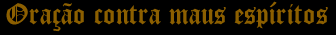

Sinal da Cruz
"Nosso Senhor Jesus Cristo, Filho de
Deus vivo, ouve minha oração. O Puríssimo
Espírito de Jesus foi, é e será, o vencedor
de todos os seus inimigos e de todos os adversários dos
que amam e crêem em Jesus Cristo. Jesus Cristo reina.
Jesus Cristo Impera. Jesus Cristo Governa por todos os séculos
dos séculos".
Assim seja!